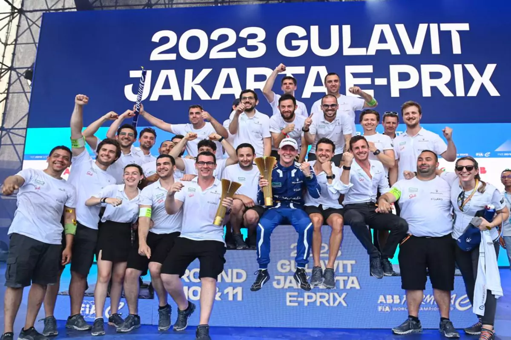

Formula‐E
 Maserati is a new entrant to Formula E, joining the championship in Season 9 (2022-2023). The team is called Maserati MSG Racing, and it is based in Monaco. The team is owned by an investor group led by Scott Swid and José M Aznar Botella. The team's drivers for Season 9 are: Jean-Éric Vergne Edoardo Mortara Maserati is using the Gen3 powertrain in Formula E, which is the most powerful and efficient powertrain to date. The team is hoping to challenge for podiums and victories in Season 9. The CEO of Maserati Formula E is James Rossiter. Rossiter is a former Formula E driver, and he has also competed in Formula 1, IndyCar, and the World Endurance Championship. Maserati is a well-known and respected brand in the automotive world, and its entry into Formula E is a major coup for the championship. The team is sure to be a contender for wins in the years to come.